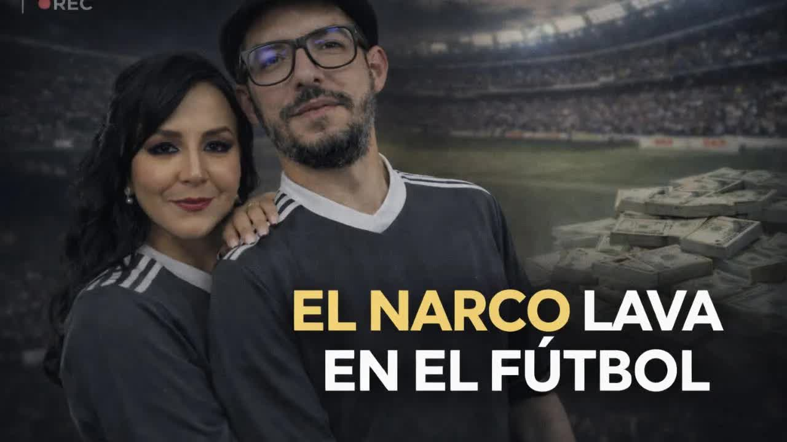

Feb 4, 2026 · Full show; the report starts after the day's agenda

From the shipping container to the field
Hundreds of accounting files from a second-division club in Guayaquil show two sets of books: one through the banks, with 460 dollar salaries, and the real one, in cash, with wages five times higher, a sports complex paid for outright and 3.5 million in spending in a year with income of 100,000. The club was founded, and according to inside sources is still run, by Héctor Pesantes, convicted of laundering money for Dritan Gjika's network.
Héctor Salomón Pesantes Sangurima, a discharged police officer, founded Agusepro, a private security company with more than 340 employees, well regarded at the time, that served the Guayas Sports Federation and the Ecuadorian Electricity Corporation, Celec. The Criminals and Contractors investigation by Connectas traced the company's state contracts worth 2.4 million dollars, mostly with Celec, during the government of Guillermo Lasso. Celec is one of the state companies that, in El Gran Padrino, appeared under the control of Danilo Carrera's circle. And Celec was hiring him while the police already had Pesantes under investigation: since 2021, in Operation León de Troya.
When the Spanish police forced Operation Pampa in February 2024, Pesantes appeared in the news as part of the Albanian mafia in Ecuador, under the alias Glock. His role, according to the authorities: coordinating shipments and facilitating trafficking logistics. According to the sources for this investigation, his specialty was containers, contaminating them, and he also provided Gjika with security rings to evade justice. On the day of the operation, those sources say, he was in charge of detecting when the authorities were closing in on Gjika's perimeter and getting him out: there were 30 arrests and 42 raids, but Gjika was not caught. In January 2025 a court sentenced Pesantes to seven years for money laundering, as part of a network that moved 43 million between 2015 and 2023. When we published this investigation he was free.
I didn't do anything. What I did was provide security, don't drag me into the Albanian mafia story.
Pesantes's position, as Boscán summarized it on the show
Agusepro did not close. It changed hands: the shares passed to Pedro Pesantes, Héctor's brother-in-law and cousin, as had happened with other companies in Gjika's network. Banco Pichincha, alerted by the Financial and Economic Analysis Unit, closed the accounts of Pesantes and his companies. Two were left: a foundation and a soccer club.

Club Profesional Astillero Fútbol Club was founded in Guayaquil in January 2022, in the second division. The Sports Ministry document of October 26, 2023, records its board: president, Héctor Pesantes; vice president, Patricia Pilar Pesantes Cepeda, owner of 13 percent of Agusepro; treasurer, Héctor Alexander Pesantes, his son and manager of Agusepro; first board member, Javier Pesantes, his brother. Four of ten seats. In December 2024 the club sent a new report to the ministry and all the Pesanteses vanished from the board; in April 2025 it changed its name to Club Deportivo Especializado Astilleros Fútbol Club, with María Elizabeth Palma as president. According to sources, she is a front: Pesantes still runs the club.
The 26 teams in Serie A and Serie B fall under the Liga Pro, which has a transparency department, requires banked transactions and reports to the UAFE. Below that line are more than 200 clubs that answer to no one. The Ecuadorian Football Federation does little oversight, and what little it does, it does badly. It is a zone where millions can move without anyone asking a question. Former U.S. ambassador Michael Fitzpatrick said Ecuadorian soccer was being contaminated by drug trafficking; when asked for names, the embassy did not give them.
For weeks we reviewed hundreds of files provided by a source: payrolls, income records, accounting documents. They show two realities. In the banked books a player earns 460 dollars. In the real ones salaries double, quadruple or multiply tenfold: that same player receives 2,500 a month. The difference is paid in cash. More than 80 percent of the payroll and 90 percent of other expenses are paid that way, with no transfer and no bank trail. The parallel books have existed since the sports complex was built.
The club's sports complex, one large field and one small one, went up in 2022 and, according to our sources, cost more than half a million dollars. All in cash: there is not a single record of how it was paid. The fields are also the justification: the club declares between 30,000 and 50,000 dollars a month in rentals, at 80 dollars an hour for the large field and 50 for the small one. Reaching 30,000 would take 600 hours a month, the field booked twenty hours a day, Monday through Sunday. Sponsorships add up to about 100,000 a year, and in 2023 and 2024 they came from Pesantes's own companies: Agusepro, a shrimp farm and a gym. According to sources inside the club, the money arrives in boxes and envelopes with orders to justify it, and Pesantes is the one who comes to the offices, gives the instructions and brings the boxes. They keep no paperwork.

The investigation was published on February 4, 2026, on Boscán and Velásquez's morning show; the report also circulates as a standalone video. The documents cited have been made available to the authorities. They are not shown in full because they would reveal the source. The Attorney General's Office accused Agusepro of running a network of the Albanian mafia and Pesantes was convicted; there is no known case against the club and no new rule for the second division. Gjika remains jailed in the United Arab Emirates awaiting an extradition that may never come. It is the same lack of oversight that allowed 71 companies in Gjika's network to stay active after El Gran Padrino.
The documents cited in this investigation are available to the authorities. We have a leader of the Albanian mafia in the Emirates and yet absolutely nothing happens.
Mónica Velásquez, February 4, 2026
The police put Pesantes on their radar while Celec keeps hiring Agusepro.
Club Profesional Astillero Fútbol Club is founded in Guayaquil and enters the second division.
Two fields for more than half a million, with no record of how they were paid for.
The Sports Ministry records four Pesanteses in ten seats.
Pesantes appears as part of Gjika's network. Clients and banks walk away.
A new report to the ministry erases the family from the board.
Seven years for money laundering. He remains free.
Club Deportivo Especializado Astilleros FC, with a president whom sources call a front.
Boscán and Velásquez publish the club's files.
Founder and former president of the club; according to sources, the man who still runs it. Founder of Agusepro
Head of the Albanian mafia in Ecuador, according to the Attorney General's Office
New shareholder of Agusepro
Nominal president of the club since 2025
As Boscán summarized it, he maintains that he only provided security and had no ties to the Albanian mafia. There is no record of a formal response from him for this investigation.
Updated September 5, 2026
Ramírez. This is like Pancho Jaime's magazine, YouTube version, but without those little drawings, my dear. Thank you very much for your message. Good morning, Anderson. Hachi and I share a birthday, says María Paz Castro. Uh, well, happy early birthday, dear María Paz, have a spectacular birthday. Good morning, Anderson. It's the first time I've watched you in a live session, since because of my work I…
Read the full transcriptpeople joining us this morning and it's an issue many people saw coming, right? Uh, drug trafficking doesn't only launder through influencers, these people who sell choripanes or have security companies, restaurants, gyms, but they also do it through soccer. It's an open secret, as the cliché goes, right? Everybody knows something is going on in soccer. T…
Read the full transcriptTranscripts from each show's automatic captions. They have not been corrected by hand: use them to find a phrase and jump to the exact minute in the video, not as verbatim quotes.
The second division is still not required to report to the UAFE.
The cartel's legal businesses and the Attorney General's Office that did nothing
2021The generals who shut down León de Troya and the commander the drug traffickers called the godmother
2026The Progen case evidence the prosecutor locked in a drawer
The figures on spending, payroll and the sports complex come from accounting files provided by a source and from testimony inside the club; they are not shown in full to protect the source. Pesantes has a laundering conviction; the club has no known case against it.